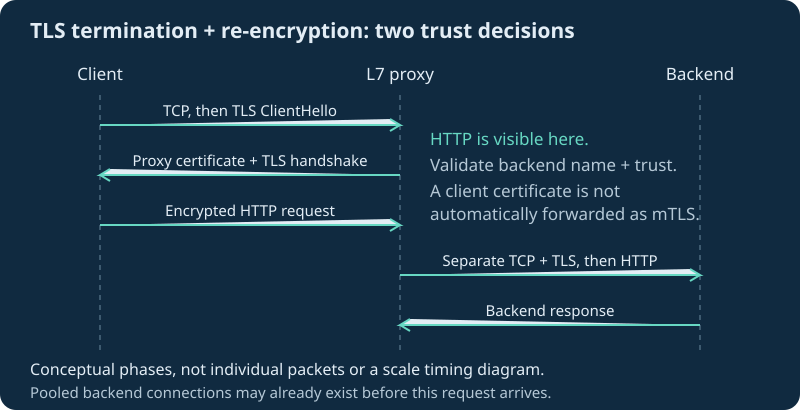

TCP, UDP, HTTP and TLS
An open port is not a working application. Transport, encryption and application protocol each have their own handshake and failure modes.
By the end you can...
Choose a transport-aware path and reason about TLS boundaries, connection reuse and latency.Connections versus requests
TCP provides an ordered reliable byte stream, with retransmission, flow control and congestion control. A connection is commonly identified by source/destination IP and port plus protocol: the five-tuple. UDP carries datagrams without built-in ordered reliable delivery; applications may add those properties.
HTTP/1.1 can reuse connections; HTTP/2 multiplexes streams on one TCP connection. Packet loss can still stall that TCP stream. HTTP/3 uses QUIC over UDP, with TLS integrated into QUIC. "UDP" does not automatically mean unencrypted or unreliable at the application layer. gRPC commonly uses HTTP/2; verify support on both legs of a proxy.

Where does TLS end?
- Pass-through: encrypted bytes reach the backend. A transport balancer cannot route on the encrypted URL path.
- Termination: the proxy presents the certificate and decrypts requests. It can inspect HTTP and apply L7 rules.
- Re-encryption: a second TLS connection protects proxy-to-backend traffic. Configure certificate trust and hostname validation on that leg.
- mTLS: both sides authenticate with certificates. Decide which hop authenticates the original client and how verified identity reaches the application.
SNI communicates the intended TLS server name; ALPN negotiates protocols such as HTTP/2. Neither is the HTTP URL path. Certificate expiry, incomplete chains, wrong names and untrusted issuers can break an otherwise reachable service. Do not "fix" this by disabling verification.
The latency budget
In a simplified new TCP + TLS 1.3 connection, TCP costs about one round trip and a full TLS handshake another before ordinary application traffic. At 80 ms RTT that is roughly 160 ms, excluding DNS, processing and transfer. Resumption, QUIC, reuse and network conditions change the result. A connection pool can save more than tuning a tiny handler.
MTU is the largest packet a link carries without fragmentation at that layer. Tunnels reduce effective payload size; broken Path MTU Discovery can make small requests succeed while large responses stall. Allow required ICMP/ICMPv6 signaling according to policy rather than blocking all of it blindly.
Do it by hand
Your proxy has a 30-second idle timeout; the backend emits a stream update every 45 seconds. Why do clients disconnect? Would raising the total request deadline alone fix it?
Show answer
The quiet interval exceeds the proxy's idle timeout. Align idle settings across the path or use supported protocol heartbeats with margin. A total deadline is a different timer. Verify whether heartbeats actually reset each component's idle timer; behavior is product-specific.
Primary reading: TLS 1.3, HTTP/3, IPv6 Path MTU Discovery.
Transport reading: RFC 9293: TCP sequence numbers, acknowledgements and connection establishment.